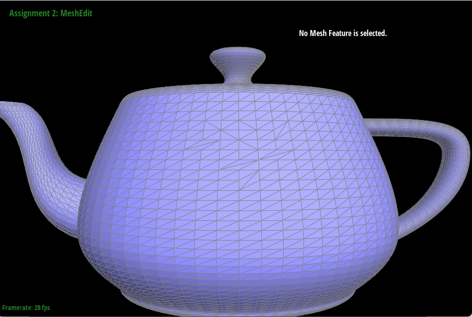
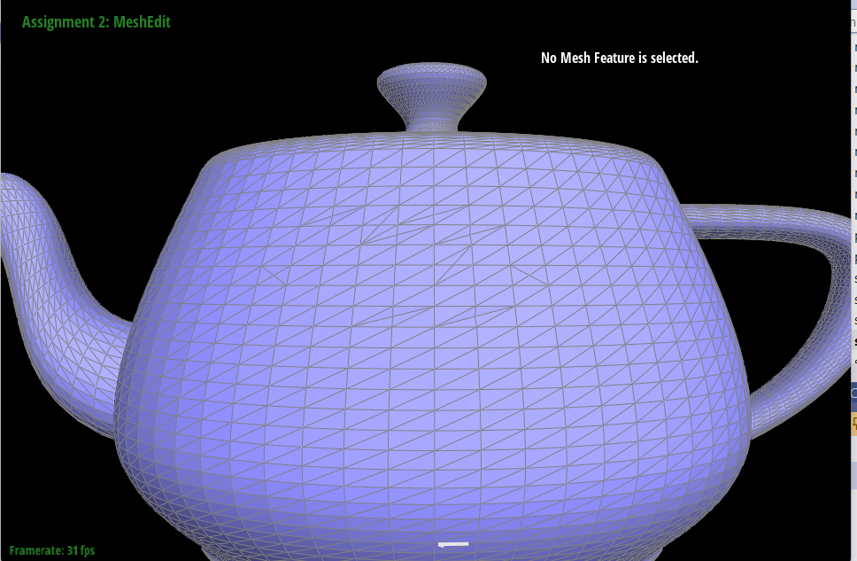
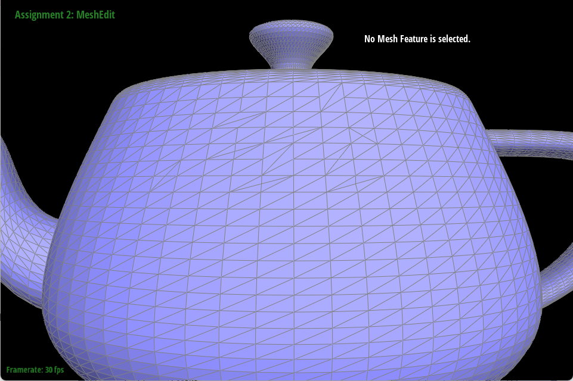
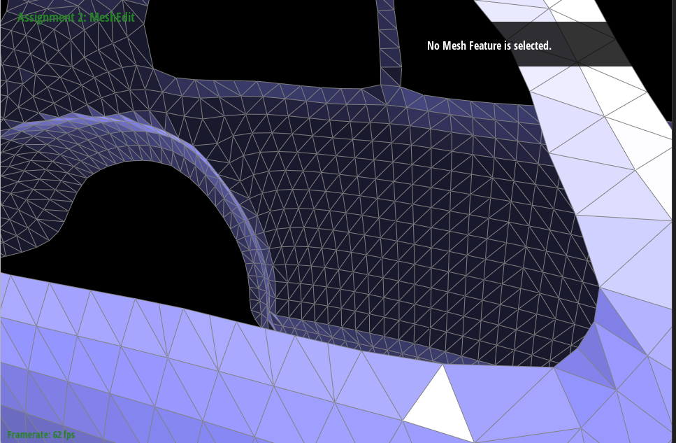
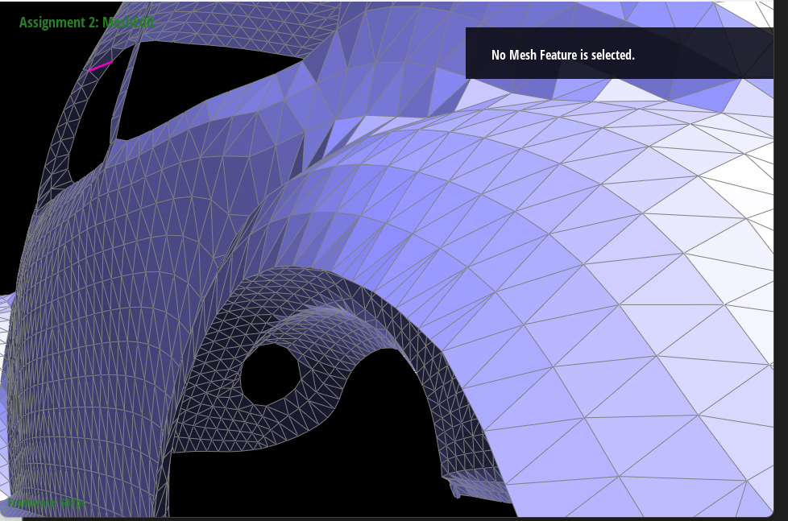
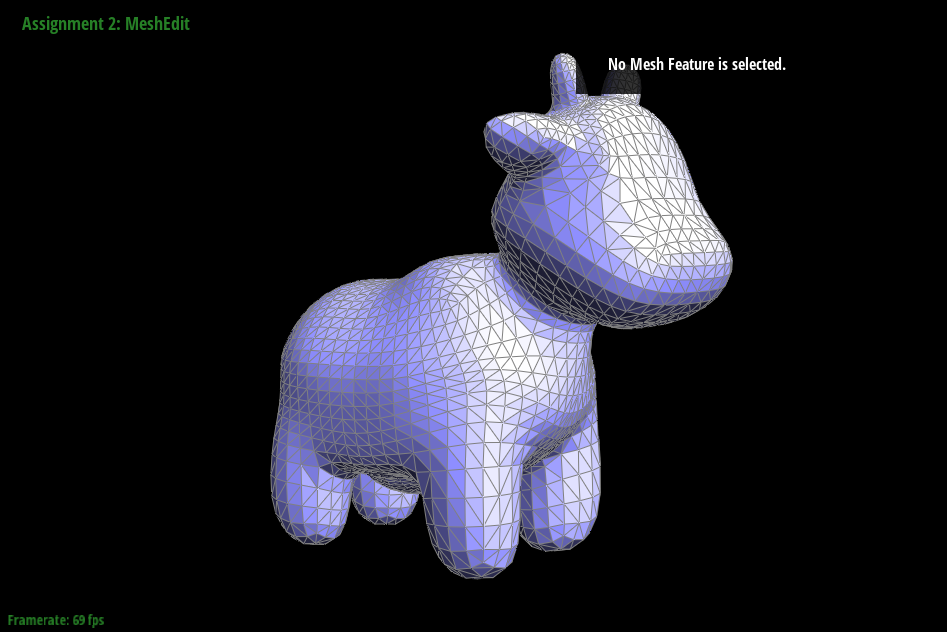
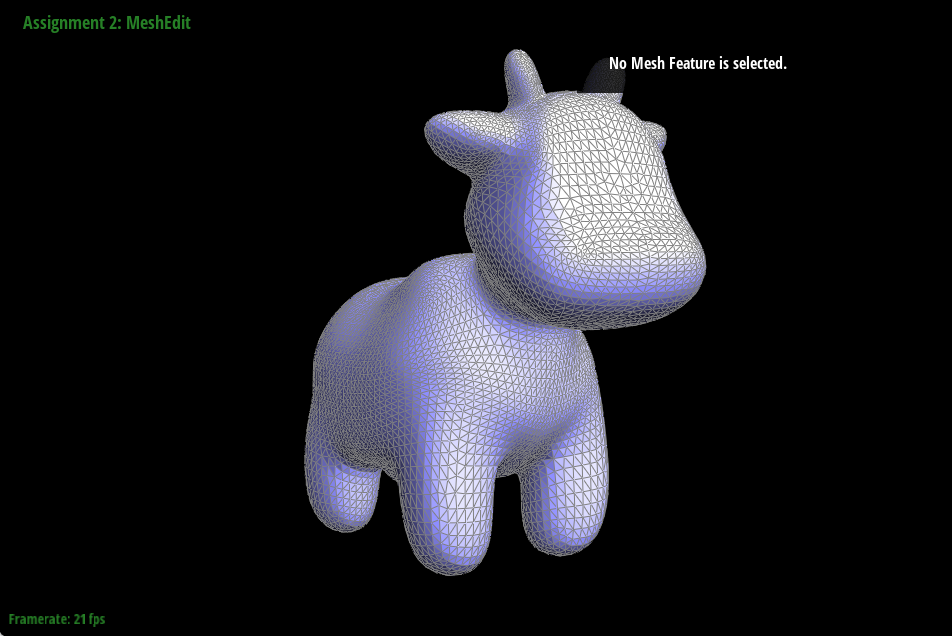
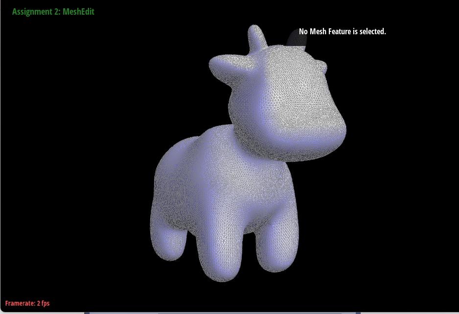
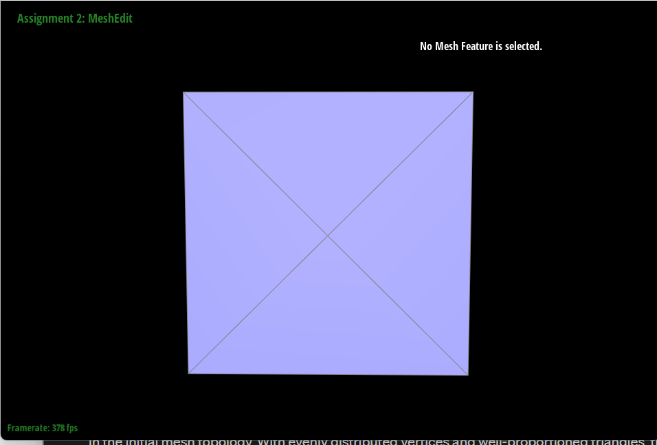
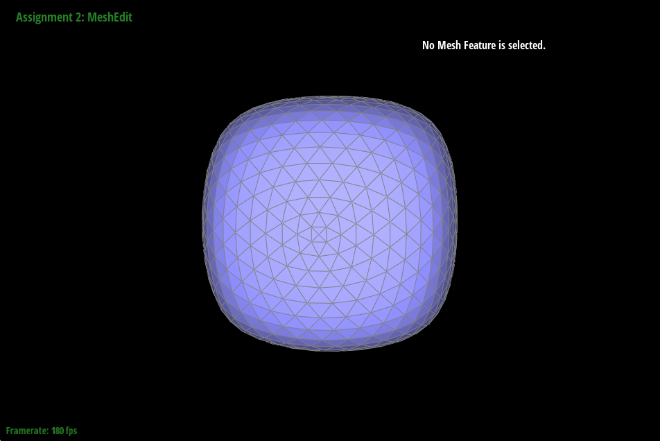

OVERVIEW :
This assignment develops methods for surface modeling: Bezier curve/surface evaluation and mesh processing. Through this assignment we developed skills in algorithm design and interaction with the half-edge data structure used for representing meshes. It was interesting to interact with the bezier curves by moving the control points, and interesting to see the algorithms from the assignment applied onto the surface of a teapot.
In part 1, we implement de Casteljau’s algorithm used for evaluating points along a bezier curve. The algorithm, and our implementation works by repeatedly subdividing the intervals between the provided control points and computing linear interpolation until we arrive at one single point. This algorithm is used for representing smooth curves. The largest implementation difficulty was making sure we properly understood the algorithm.
In part 2, we extend the bezier curve evaluation to points on 3D surfaces: we interpolate between 3D control points in both u and v directions. We achieved this by implementing
evaluateStep, evaluate1D, and evaluate which work together by first applying de Casteljau’s in the u direction and then in the v to arrive at one single point. The largest difficulty here was conceptualizing how we would apply the algorithm in both the u and the v directions.
In part 3, we begin working with the half-edge data structure for representing triangle meshes. We begin by implementing a function for computing the area-weighted vertex normals. In this function, we iterate through the faces which include the vertex using the data structure and use the cross product of two of its edges to find the normal. We then scale this normal by the area of the triangle and accumulate it to our “total normal” to obtain the area weighted vertex normal. The largest difficulty here was learning to work the new data structure.
In part 4, we implement the edgeflip method, which takes in an edge as a parameter and rewires the edge. Before implementing the method, we had to make sure that we were proficient with the halfedgeMesh class. We read the primer and used it in our implementation. In this method, we collect all the elements that will be affected by the operation. Then we reassign all the elements so that the pointers all point to their corresponding elements. This is done using a diagram we drew which helped simplify the process.
In part 5, the implementation of the edgesplit operation was required. To tackle this problem we first drew a diagram of both the before and after states. We made sure to label all the elements that will be affected by the split. Then we collected all those elements in the code. To collect an element we had to traverse through the mesh. Once we collected the elements, we allocated new elements that we will use when reassigning the values. For the task of value reassignment, we followed the diagram like a blueprint and exhaustively updated all the pointers.
In part 6, we were tasked with the implementation of mesh upsampling. It is an operation that takes in a mesh and makes that mesh smoother. To upsample a mesh we chose the algorithm of Loop subdivision. This algorithm first precomputes all the vertices' positions. Then we subdivide each triangle using a 4-1 subdivision. In this step each triangle is split and then an edge gets flipped. The final stage of this algorithm is to update the positions of the vertices to the precomputed ones.
Part 1 :
Briefly explain de Casteljau's algorithm and how you implemented it in order to evaluate Bezier curves.
De Casteljau’s algorithm is an algorithm for evaluating points along a Bezier curve. Considering the lines connecting the control points as our base set of intervals, the algorithm recursively divides the intervals between the points into the ratio t:(1-t) and connects the new points at the division of each interval. Then the algorithm recursively repeats this process on each interval until arriving at a single point. This point corresponds to the parameter t and is a point along the bezier curve.
Our implementation evaluates one iteration of the algorithm. We begin by initializing an empty vector to store the interpolated points. It then iterates over pairs of adjacent control points. At each par, we compute a linear interpolation using the parameter t and push the result into our vector which stores the values for the next iteration. We repeat this process until we reach the last pair of control points, then return this next_ points array.
One would call this one step function until the returned array has size 1.
Take a look at the provided .bzc files and create your own Bezier curve with 6 control points of your choosing. Use this Bezier curve for your screenshots below.
Show screenshots of each step / level of the evaluation from the original control points down to the final evaluated point. Press E to step through. Toggle C to show the completed Bezier curve as well.


Show a screenshot of a slightly different Bezier curve by moving the original control points around and modifying the parameter t via mouse scrolling.

Part 2 :
Briefly explain how de Casteljau algorithm extends to Bezier surfaces and how you implemented it in order to evaluate Bezier surfaces.
De Casteljau’s algorithm extends to surfaces by recursing on 3D control points in a control points matrix as opposed to 2D control points. Then at each iteration, the algorithm gets a new set of control points by linearly interpolating between adjacent points in both a u and v direction until arriving at a single point.
Our implementation uses three functions: evaluate step, evaluate1D, and evaluate3D
EvaluateStep: this function is essentially identical to the function from part 1, but we now we instead interpolate the respective coordinates within 3D control points in order to support the interpolation between the control points in one direction of the surface.
evaluate 1D: this function recursively applies evaluateStep until we arrive at a single point. This function completes the full de castljau’s algorithm in one direction given a set of control points.
Evaluate: this function takes in the parameters u and v which are scalars representing the position along the u and v directions of a patch along a curve. This function first uses evaluate1D to evaluate along the u-direction of the curve; for each row of control points, we use evaluate1D to compute the interpolated point at parameter u and store these points in a u_points vector. Then we interpolate in the v direction by using evaluate1D on the u_points, along with the parameter v, which then yields our final point on the bezier surface.
Show a screenshot of bez/teapot.bez (not .dae) evaluated by your implementation.

Part 3 :
Briefly explain how you implemented the area-weighted vertex normals.
We begin by initializing a zero vector that will store the normal for return
Then, with use of the half-edge data structure, we iterate through the faces that include this vertex.
For each face, we get the vertices of that face, then use those vertices to compute two of the edges of that face ( done by subtracting vertex positions). Next , we compute the cross product of these two edges to get the face normal. Then , we scale the face normal by the area of the triangle to get the area weighted normal.
Finally, we add the weighted normal to the total normal vector initialized at the start.
Show screenshots of dae/teapot.dae (not .bez) comparing teapot shading with and without vertex normals. Use Q to toggle default flat shading and Phong shading.


Part 4 :
Briefly explain how you implemented the edge flip operation and describe any interesting implementation / debugging tricks you have used.
We looked through the spec and found the primer for the halfedgeMesh class. This is how we learned to modify the given mesh. Then at the bottom of the primer, there was a useful guide on how to implement edge operations. In the guide, we noticed an image with the before and after of the mesh. We then used the image to describe to the computer how we wanted the mesh to be connected using the after as a blueprint. Having the image written and elements labeled made it easy to write the method. The first stage of our implementation is collecting all the elements from the before pictures. this will help us reference them faster, as well as have a list of them. Then we reassigned all the pointers in the mesh to make them the same as the after diagram.
Show screenshots of the teapot before and after some edge flips

Write about your eventful debugging journey, if you have experienced one.
Fortunately using the diagrams saved us from having a hard debugging journey. We made sure to input all the values correctly the first time.
Part 5 :
Briefly explain how you implemented the edge split operation and describe any interesting implementation / debugging tricks you have used.
The edge split operation felt the same as the flip operation. This is because we sketched a labeled diagram of what the mesh looks like after the split. we made sure to label everything correctly, then wrote it into code. The only difference was we had to create new elements. The first step was to collect all the elements in labeled variables. Then we allocated elements using the provided methods as needed. Finally, all that is left to do is reassign all the elements. We made sure to be exhaustive and to reassign every element’s pointers, even the pointers that stay the same.
Show screenshots of a mesh before and after some edge splits.

Show screenshots of a mesh before and after a combination of both edge splits and edge flips.

Write about your eventful debugging journey, if you have experienced one.
Similarly to part 4, we fortunately did not have a hard time debugging as we were careful in our initial implementation and checked over our code to find any minor bugs we had.
If you have implemented support for boundary edges, show screenshots of your implementation properly handling split operations on boundary edges.


Part 6 :
Briefly explain how you implemented the loop subdivision and describe any interesting implementation / debugging tricks you have used.
To implement loop subdivision, we started by iterating over all the vertices and summing the positions of all the neighboring vertices (This was done using a while loop). We weighted the original position with the sum of the neighbors as was demanded by the spec. For every vertex, we stored that vector in the newPosition variable. The next step is to iterate through the edges and add them to a list (to make sure you know these are the old edges), and finally update their position according to the vertices. The third step is to split all the edges that were added to the list. After every split, you have to make sure that you update isNew based on the vertices of each newly added edge. Then flip the edges based on the vertices they touch. The final step is to move all the vertices newPosition variables to their respective position variables.
Take some notes, as well as some screenshots, of your observations on how meshes behave after loop subdivision. What happens to sharp corners and edges? Can you reduce this effect by pre-splitting some edges?
Using the below cow as an example, sharp edges, and corners tend to become much smoother and more rounded since they are being averaged by neighboring vertices. The triangles become smaller which allows for the cow's ears and jaw to go from being quite jagged to smooth.
Pre-splitting edges could help preserve edges by introducing more vertices along the edges we want to keep sharp. Having more vertices gives the subdivision algorithm more vertices along the edge that it must consider while averaging which leads the algorithm to better capture the detail of the edge as well as giving loop subdivision more triangles to split.



Load dae/cube.dae. Perform several iterations of loop subdivision on the cube. Notice that the cube becomes slightly asymmetric after repeated subdivisions. Can you pre-process the cube with edge flips and splits so that the cube subdivides symmetrically? Document these effects and explain why they occur. Also explain how your pre-processing helps alleviate the effects.
The effects of flipping an edge would depend on the chosen edge. Sometimes the flip makes an indent in the cube which doesn’t help the symmetry. When you flip the edge in front of the camera when loading in, you mess up the symmetry of the cube. Splitting edges proved more successful in adding symmetry to the cube. We figured that if we split all the sides of the cube into an x. Then the cube is symmetrical, and then whatever loop subdivision does to one side it should do to the other side.In the preprocessed cube we can see there are now four triangles per face, then as we subdivide the cube, it still rounds but we have a symmetrically rounded version of the cube.

